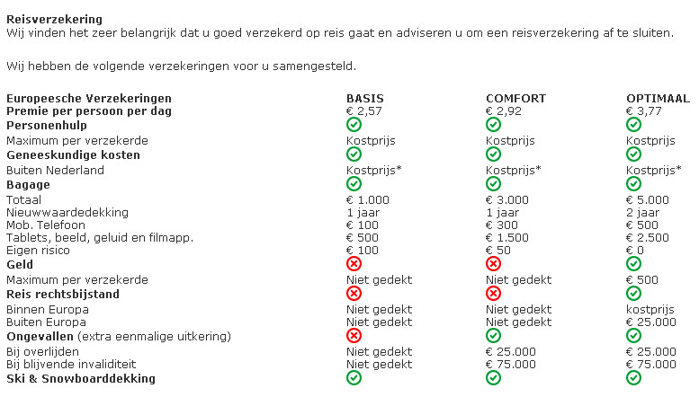

Espace Killy met Tignes/Val Claret
Vrijdag 22 januari t/m zondag 31 januari 2016
Skigebied
Tignes / Val Claret (1550m)
Espace Killy (1550-3456m)
http://www.tignes-spirit. com/tignes/villages/val-claret
Tignes is een onderdeel van één van de grootste skigebieden in Frankrijk: Espace Killy.
Het gebied is 1550 tot 3650 meter hoog, van het dorp Les Brévières tot de gletsjer Le Pissaillas
met de spitsen van Percée en La Grande Motte.
Tignes bestaat uit 3 dorpsdelen: Val Claret, Le Lac en Le Lavachet.
De (niet)skiërs kunnen gratis met de skibus reizen naar andere dorpsdelen en vice versa.
Vanuit Val Claret vertrekt een kabelbaan direct naar de gletsjer La Grande Motte.
Tussen Tignes, Le Lac en Le Lavachet bevindt zich een lift die bij de gletsjer eindigt.
Vanaf alle drie de dorpsdelen vertrekken ook vele sleep- en stoeltjesliften.
Après-skiën kan in de vele barretjes in Tignes, Le Lac en Val Claret.
Accomodatie
Hotel Le Diva***
Dit hotel heeft een perfecte ligging. Gezelligheid staat hier centraal.
De keurig ingerichte comfortabele kamers bieden uitzicht over de omgeving.
Nagenieten kan op het mooie zonneterras, of in de fitnessruimte, sauna en hamam.
Ligging en omgeving
Afstand tot de skipiste: ca. 50 m
Afstand tot de winkels: ca. 25 m. De supermarkt ligt om de hoek.
Verzorging
Basis halfpension, ontbijtbuffet, diner met salade / dessert buffet.
Faciliteiten
Receptie (24 uur geopend), twee liften, kluisje (bij receptie), Wi-Fi in openbare ruimte (gratis), restaurants, bar, skilockers, hamam (gratis), sauna (gratis), solarium, massage (€)
Kamers
Voorzien van badkamer (toilet, bad en/of douche), tv, telefoon, föhn.
Kamerindeling
Alleen-inschrijvende deelnemers(sters) krijgen ca. zes weken voor vertrek een lijst met namen toegestuurd van dames of heren die nog geen kamerpartner hebben. Zij kunnen uit die lijst een keuze maken.
Transfer
Royal Class touringcar
Opstapplaatsen:
Zwolle (alleen instap)
Opstapplaats Zwolle
Hanzelaan 101 8017JE Zwolle (P+R) achter Centraal Station. Voor de reis naar Tignes wordt de vertrektijd op de busvoucher vermeld. Overgestapt wordt in 'De Lucht' aan A2 op busnr. ..(wordt nog bekend gemaakt) Op de terugreis kan niet in Zwolle worden uitgestapt, maar bijv. in Utrecht of iets dergelijks!
Opstapplaats Rotterdam
Metrostation Capelsebrug, Abram v.Rijckevorselplein 40, 3065 SM Rotterdam (P+R11 vrij parkeren).
De opstapplaats van touringcars is op de vrachtwagenparkeerplaats, rechts van het metrostation.
Personenauto's kunnen hier parkeren, doch onbewaakt.
Voor de reis naar Tignes wordt de vertrektijd op de busvoucher vermeld.
Overgestapt wordt in 'De Lucht' aan A2 op busnr. ..(wordt nog bekend gemaakt)
Opstapplaats Amsterdam
Europaboulevard 24, bus stopt op parkeerterrein (P18) aan de overzijde van het Shell tankstation.
Voor de reis naar Tignes wordt de vertrektijd op de busvoucher vermeld.
Overgestapt wordt in 'De Lucht' aan A2 op busnr. ..(wordt nog bekend gemaakt)
Opstapplaats Utrecht
Leidsche Rijn, Muziektheater Vredenburg, J.C.Verthorenpad 100 3541MV Utrecht (P+R)
Opstaplocatie bij P+R, (P1 betaald parkeren), ligt aan snelweg A2 afrit nr.7, volg borden P+R Muziektheater Vredenburg.
Mogelijkheid om gratis te parkeren: zet de auto in een woonwijk, bijv. Korianderstraat, vandaar 1 halte met stadsbus 28 naar Vleutenseweg. Opstaplocatie van de touringcars is praktisch beneden de weg bij het Muziektheater.
Voor de reis naar Tignes wordt de vertrektijd op de busvoucher vermeld.
Overgestapt wordt in 'De Lucht' aan A2 op busnr. ..(wordt nog bekend gemaakt)
Bruchem(met pauze-stop en op-/overstap op parkeerplaats)
Pauzeer- en overstapplaats Bruchem
Op de parkeerplaats bij Restaurant 'De Lucht' (www.delucht.nl, A2 Rijksweg 2, 5314LJ Bruchem, ±7 km voor ring van 's Hertogenbosch) arriveren de bussen vanuit het hele land.
Indien nodig wordt hier overgestapt op de bus die naar de vakantiebestemming gaat.
De overstap kan worden gecombineerd met een eventueel gebruik van het diner in restaurant 'De Lucht'.
Voor de reis naar Tignes wordt de vertrektijd op de busvoucher vermeld.
Personenauto's kunnen hier parkeren, doch onbewaakt.
Opstapplaats Eindhoven
P+R Meerhoven bevindt zich ter hoogte van A2 / Noord Brabantlaan (afrit 31 Veldhoven), ingang via Sliffertsestraat.
Voor de reis naar Tignes wordt de vertrektijd op de busvoucher vermeld.
Dan via Maastricht of Heerlen naar Wagrain(Oostenrijk) en Tignes (Frankrijk).
Opstapplaats Maastricht
MVV-stadion, 'De Geuselt' op parking Stadionplein 32 6225XM Maastricht
Voor de reis naar Tignes wordt de vertrektijd op de busvoucher vermeld.
Let op:
- In Tignes - Val Claret is het voor bussen verboden om verder te rijden dan de parkeerplaats.
- Vanaf de parkeerplaats is het ca. 150 meter lopen naar Hotel Le Diva.
- Van de deelnemers wordt verwacht dat ze zelf hun bagage van de bus naar het hotel brengen, en andersom.
- Deelnemers die met de auto komen zijn verplicht de auto tegen betaling te parkeren op één van de parkeerterreinen.

Arrangement
| ❄ 2-persoonskamer | €809,- p.p. (2 personen op 2-persoonskamer) |
| ❄ 1-persoons kamer |
€1234,- p.p. (€809,- + toeslag €425,-) (alleen op aanvraag) |
| ❄ Kamer met zicht op piste | toeslag €140,- (2 personen x €70,- p.p. Alleen op aanvraag mogelijk) |
Inclusief:
- Luxe Royal Class nachtpendeldienst van Sunweb van Nederland naar Frankrijk-Tignes/Val Claret v.v.
- De bus met de bijbehorende faciliteiten oa. video, toilet, bar met koffie, thee, fris en bier.
- 7 overnachtingen op basis van halfpension. (diner op dag van aankomst, ontbijt op de dag van vertrek).
- Skipas “Tignes ” voor 6 dagen (zondag t/m vrijdag).
- Toeristenbelasting
- Reserveringskosten
- Calamiteitenfonds
Skihuur
3 typen skimateriaal, bij boeking opgeven, prijzen per persoon
| classic | premium | expert | |
| 7 dg. carveski’s | € 55,- | € 79,- | € 95,- |
| 7 dg. carveski/-stok./-schoenen | € 69,- | € 95,- | € 115,- |
| 8 dg. carveski’s | € 65,- | € 89,- | € 109,- |
| 8 dg. carveski/-stok./-schoenen | € 79.- | € 105,- | € 129,- |
Prijzen van de huur van snowboard- en/of langlaufmateriaal zijn verkrijgbaar op aanvraag.
Indien gewenst kan de skiverhuur ook zelf worden geregeld.
Skihuur en skilessen worden niet collectief georganiseerd
Skipassen
| Tignes | |
| ❄ 6dg.skipas (in arrangement) | € 00,- (zo-vr) |
| ❄ 6dg skipas senior 64tm74jr. | - € 32,- (zo-vr) |
| ❄ 7dg skipas | € 27,- (zo-za) |
| ❄ 7dg skipas senior 64tm74jr. | - € 36,- (zo-za) |
| Espace Killy | |
| ❄ 6dg.skipas | € 34,- (zo-vr) |
| ❄ 6dg.skipas senior 64tm74jr. | - € 38,- (zo-vr) |
| ❄ 7dg. skipas | € 66,- (zo-za) |
| ❄ 7dg.skipas senior 64tm74jr | - € 44,- (zo-za) |
| ❄ 8dg.skipas | € 66,- (za-za) |
| ❄ 8dg.skipas senior 64tm74jr | - € 44,- (za-za) |
| ❄ Geen skipas en/of >75 jr. | - € 145,- |
Senioren vanaf 75 jr. krijgen gratis skipas, zelf af te halen bij de kassa van de liftmaatschappij met bijbetaling voor leges kosten cq administratiekosten.
Vervoer op-/uitstap toeslag per retourreis
| Zwolle (alleen instap) | € 7,50 | |
| Amsterdam | € 15,- (2x7,50) | |
| Rotterdam | € 10,- (2x5,-) | |
| Utrecht | € 10,- (2x5,-) | |
| Bruchem | € 00,- | |
| Eindhoven | € 00,- | |
| Maastricht | € 00,- |
Reductie
| Geen skipas | € 145,- |
Extra kosten
| Annuleringsverzekering | 6% van gehele reissom |
| Poliskosten | € 1,20 |
| adm./tel./com. kosten | € 7,50 |
Reisverzekering
Zorg dat er altijd een reisverzekering is.
De reisverzekering kan via Sunweb worden afgesloten volgens onderstaande tabel
Wat zijn de reisverzekering voorwaarden van Basis, Comfort, Optimaal
Unieke dekking bij alle 3 de opties:
- Dekking voor hulpverlening en repatriëring als thuisblijvende ex-partner, familie 1ste, 2e of 3e graad iets ernstigs overkomt en u wilt naar huis terug.
- Dekking voor off-piste (indien niet verboden).
- Ski- en snowboarduitrusting gedekt onder de bagagedekking
- Kosten van skipassen, skilessen en gehuurde skiuitrusting, als u daar door een ongeval of voortijdige terugkeer geen gebruik meer van kunt maken. De verzekeringsmaatschappij vergoedt dan alleen de kosten van de niet-gebruikte dagen
Indien u een kortlopende reisverzekering heeft gesloten in of voor medio februari 2015, herkenbaar aan de naam ‘kortlopende reisverzekering’ en een premie van € 2,60 per persoon per dag, dan vindt u hier de algemene verzekeringsvoorwaarden (pdf).
Hier vindt u de algemene verzekeringsvoorwaarden voor deze kortlopende reisverzekering (pdf).